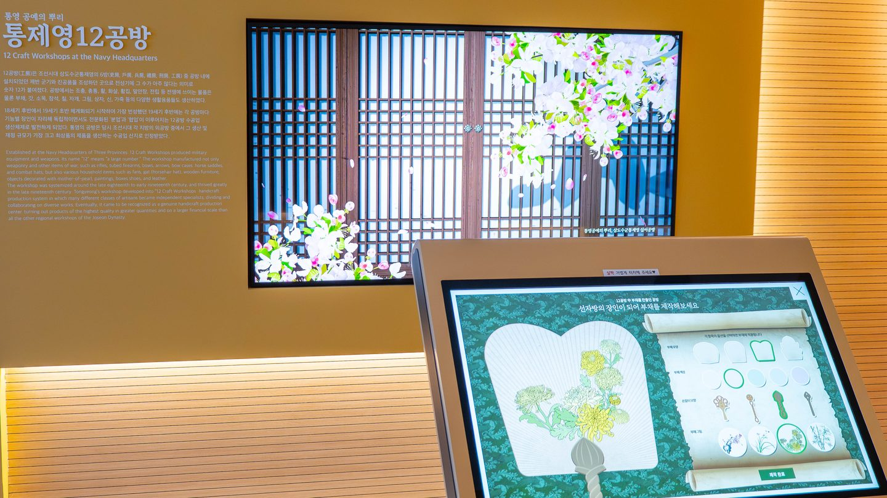

Exhibits and Records: Tracing the History of Samdo Sugun Tongjeyeong
Exterior of the Samdo Sugun Tongjeyeong History Museum
The story continues in exhibits and records
The Samdo Sugun Tongjeyeong History Museum is an indoor exhibition hall that presents the history of Tongjeyeong through exhibits and records. If Sebyeonggwan Hall and the workshop street introduced you to Tongjeyeong through its buildings and names, here you can see how it was actually run.
The museum brings together the history of Tongjeyeong, from its founding to its closure and later restoration, along with the stories of the commanders who led its naval forces over that time. Most of the exhibits are immersive digital displays: you tap the screens and make choices as you go. Naval operations and drills that are hard to picture on the grounds unfold here right before your eyes.
Searching 300 years of records
Model of Cheongnamnu Pavilion and the 300-year history panel
Near the entrance stands a model of Cheongnamnu Pavilion. Beside it, the 300-year history panel lets you look up keywords from Tongjeyeong’s history one by one. Tap a keyword and its explanation appears, while the old-map screen in front of you marks the year and place of the event.
The stories took you from the camp on Hansando in 1593 to the new site at Duryongpo in 1603 and the closure in 1895. Trace those dates and places again on the map, and Tongjeyeong’s history comes together as one continuous timeline.
208 commanders
Wall of commanders’ name plaques
On the wall of the next room hang the name plaques of all 208 commanders, who led the naval forces of the three provinces from 1593 to 1895. At the head of the row is the name of the first commander, Yi Sun-sin. Held in turn by one commander after another, this single post spans the long history of Tongjeyeong.
The same room holds an installation that recreates a commander’s ceremony in light and mirrors. With the lights reflected endlessly in the mirrors, the space also makes a great backdrop for photos.
Sujo: joint drills at sea
Sujo interactive exhibit
Every spring and autumn, Tongjeyeong held joint drills that brought together the naval forces of the three provinces. These drills were called sujo (水操), and the spring drill is said to have mobilized more than 540 warships and 36,000 troops.
The museum’s sujo exhibit is an interactive kiosk based on Sugun Joryeondo, a historical painting of Tongjeyeong’s naval drills. You can choose battle plans and naval strategies yourself and see how turtle ships took their place in formation alongside panokseon warships. You can also deploy the crane-wing formation on screen, with ships fanning out like a crane’s wings to surround the enemy.
Back to the workshops, and to the screen

12 Workshops digital exhibit
The last panel lets you experience the 12 Workshops digitally. Choose a workshop on the map to try its craft: pick najeonchilgi, for example, and you match the colors and patterns of a piece. The miseon fans, gat hats and hanging scrolls you make on screen appear in the room right away. It is a chance to meet the names and skills of the workshop street again, this time at your fingertips.
Immersive digital theater
Near the entrance, the immersive digital theater shows a nine-minute film about sujo, the joint drills of the three provinces’ naval forces. Put these scenes of drills at sea together with the wooden floor of Sebyeonggwan Hall and the workshop street, and the picture of Tongjeyeong as a military base is complete.
“Having met Tongjeyeong through buildings, you now meet it again here in records and scenes.”
통영,세병관에서 12공방까지Tongyeong, From Sebyeonggwan Hall to the 12 Workshops
Visitor route · Ticket office to the History Museum
Workshop route · Sebyeonggwan to Yajangbang
From Sebyeonggwan, enter the workshop street behind it and visit 04 Seonjabang through 16 Yajangbang in order. This diagram shows the order of the stops, not the actual layout of the buildings. Tap a number to read its story.